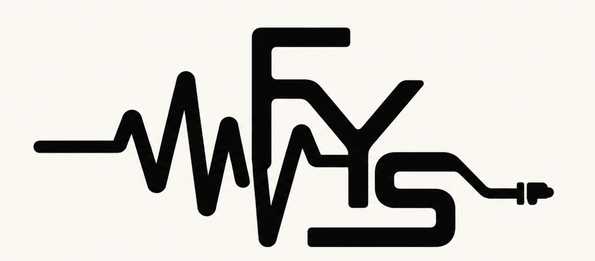

Your Mix Trash
Logic Pro AU
Universal Lite and Full Audio Unit builds are packaged separately. Analysis runs inside the plugin with no background service.

Fix Your SoundAudio tools for real mixesMac-first support
The first Fix Your Sound release supports Logic Pro on macOS through Audio Units. Ableton Live support is planned for a later release and is not included or validated for launch.
Your Mix Trash
Universal Lite and Full Audio Unit builds are packaged separately. Analysis runs inside the plugin with no background service.
BassPhat
Universal Lite and Full Audio Unit builds keep separate identities for a clean upgrade path.
Plugin Suite
The suite should make both products available without hiding which installer added which plugin.
Ableton capability